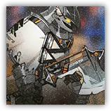

“锈铜”奥尔默·英格拉 Ormer Ingra the Rustcopper
近战 物理；精英 类人（库兰塔）

|
 |
“锈铜”奥尔默·英格拉。被称为"赛场屠夫"的大骑士！数次因行径残暴而被判犯规，又数次凭着企业献金避免了审判团的制裁！古老的骑士家族英格拉家的幺子！愈战愈勇的无情斗士！奥尔默·英格拉——！ 赛场屠夫。对奥尔默而言，观众越是狂热，鲜血越是喷涌，他手中那柄锈迹斑斑的巨斧便挥舞得越发凶狠。 |
"那好吧，就让你的右手在你的身上多呆一会......反正就一小会。"
“锈铜”奥尔默·英格拉丨Olmer Ingra, the Brassrust Knight
中型类人（库兰塔），混乱邪恶
| AC 18 | 先攻 +6（16） |
| HP 195（23d8+92） | |
| 速度 35 尺 | |
| 调整 | 豁免 | 调整 | 豁免 | 调整 | 豁免 | |||||||||
|---|---|---|---|---|---|---|---|---|---|---|---|---|---|---|
| 力量 | 21 | +5 | +9 | 敏捷 | 14 | +2 | +2 | 体质 | 18 | +4 | +8 | |||
| 智力 | 10 | +0 | +0 | 感知 | 13 | +1 | +5 | 魅力 | 16 | +3 | +3 |
| 技能 运动+9，威吓+7，察觉+5 |
| 感官 黑暗视觉60尺，被动察觉15 |
| 语言 通用语，卡西米尔语 |
| CR 12（XP 8,400；PB+4） |
特质 Traits
愈战愈勇 Boiling Resolve。每当一名奥尔默可见的60尺内的盟友生命值降至0时，奥尔默获得一层沸血状态（至多叠加3层）。每层沸血使其近战武器攻击的伤害掷骰获得+2加值。沸血状态持续1分钟。叠加至三层时，奥尔默免疫恐慌状态且攻击检定具有优势。
赛场屠夫 Arena Butcher。奥尔默对浴血的生物进行的近战攻击检定具有优势。奥尔默发动的借机攻击命中时，目标剩余移动力归0。
锈铜狂怒 Rustcopper Fury。奥尔默浴血期间，他每回合可以使得自己命中的一次锈铜巨斧攻击额外造成9（2d8）伤害。
动作 Actions
多重攻击 Multiattack。奥尔默发动三次锈铜巨斧攻击。他可以将其中一次攻击替换为残暴挥砍。若任何生物因这些攻击生命值降至0，奥尔默可以再追加发动一次锈铜巨斧攻击。
锈铜巨斧 Rustcopper Greataxe。近战攻击检定：+10，触及5尺。命中：17（2d10+5）挥砍伤害，外加此骑士当前沸血层数×2的伤害。
残暴挥砍 Brutal Cleave（充能5~6）。奥尔默以巨斧横扫身前。敏捷豁免检定：DC17，位于其前方15尺锥形区域内的每个生物。失败：目标受到33（6d10）挥砍伤害外加此骑士当前沸血层数×2的伤害，并被击退10尺后陷入倒地状态。成功：仅半伤。
附赠动作 Bonus Actions
热血突进 Fervent Rush（仅在处于沸血状态时）。奥尔默向一名其可见的敌人移动至多等于其速度的距离，此移动不会引发借机攻击。若移动结束时目标处于触及距离内，可以立即对其发动一次锈铜巨斧攻击。
反应 Reactions
血债血偿 Blood for Blood（仅在处于沸血状态时）。触发：奥尔默被其触及距离内一个敌人的近战攻击命中。响应：奥尔默可以对该攻击者发动一次锈铜巨斧攻击。